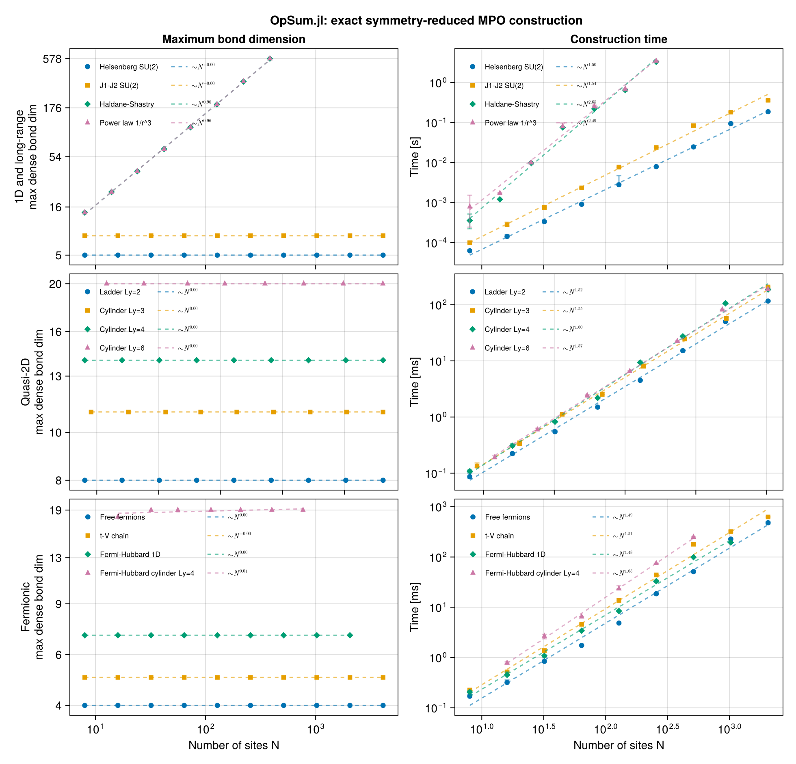
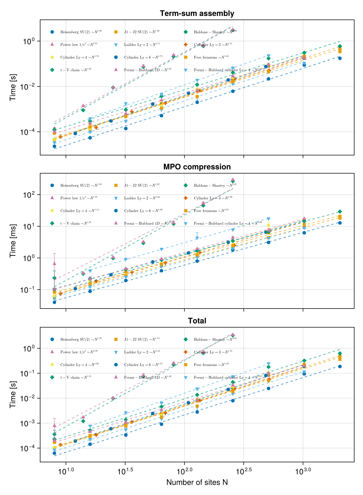

Spin chains
This page builds the three workhorse one-dimensional spin models and shows how the symmetry you impose and the range of the interaction each leave a distinct fingerprint on the MPO bond dimension:
| model | symmetry | reduced $D$ | dense-equivalent $D$ |
|---|---|---|---|
| Heisenberg | SU(2) | 3 | 5 |
| XXZ | U(1) | 6 | 6 |
| $J_1$–$J_2$ | SU(2) | 4 | 8 |
The reduced bond dimension counts symmetry-resolved indices — what a DMRG sweep actually pays for. The dense-equivalent one is what a symmetry-agnostic MPO would need for the same operator.
using OpSum: OpSum
include(joinpath(pkgdir(OpSum), "examples", "common.jl"))Main.hermiticity_errorSU(2) Heisenberg
\[H = J \sum_i \vec{S}_i \cdot \vec{S}_{i+1}\]
With SU(2) symmetry there is a single on-site operator to speak of: the rank-1 vector operator $\vec{S}$, provided by spin. dot contracts two of them into the rotationally invariant scalar product, so the Hamiltonian is a one-liner.
Note the two idioms used here and throughout. S = spin(V) is hoisted out of the loop — it recomputes its normalization on every call otherwise — and the terms are collected into a Vector before summing. Never write reduce(+, generator): adding two TermSums rebuilds the underlying dictionary, and folding over a generator makes that quadratic in the number of terms.
V = SU2Space(1 // 2 => 1)
S = spin(V)
heisenberg(N; J = 1.0) = sum([J * dot(S[i], S[i + 1]) for i in 1:(N - 1)])
N = 8
sites = fill(V, N)
H_heis = heisenberg(N)
res_heis = build("Heisenberg SU(2)", H_heis, sites)(Ws = SparseArrays.SparseMatrixCSC{OpSum.SiteOperator{TensorKitSectors.SU2Irrep}, Int64}[sparse([1, 1], [1, 2], OpSum.SiteOperator{TensorKitSectors.SU2Irrep}[SiteOperator{TensorKitSectors.SU2Irrep}(ITO(Irrep[SU₂](1), n=1)), SiteOperator{TensorKitSectors.SU2Irrep}(ITO(Irrep[SU₂](0), n=0))], 1, 2), sparse([1, 2, 2], [1, 2, 3], OpSum.SiteOperator{TensorKitSectors.SU2Irrep}[SiteOperator{TensorKitSectors.SU2Irrep}(ITO(Irrep[SU₂](1), n=1)), SiteOperator{TensorKitSectors.SU2Irrep}(ITO(Irrep[SU₂](1), n=1)), SiteOperator{TensorKitSectors.SU2Irrep}(ITO(Irrep[SU₂](0), n=0))], 2, 3), sparse([1, 2, 3, 3], [1, 1, 2, 3], OpSum.SiteOperator{TensorKitSectors.SU2Irrep}[SiteOperator{TensorKitSectors.SU2Irrep}(-2.5980762113533156 - 0.0im*ITO(Irrep[SU₂](0), n=0)), SiteOperator{TensorKitSectors.SU2Irrep}(-2.5980762113533156 - 0.0im*ITO(Irrep[SU₂](1), n=1)), SiteOperator{TensorKitSectors.SU2Irrep}(ITO(Irrep[SU₂](1), n=1)), SiteOperator{TensorKitSectors.SU2Irrep}(ITO(Irrep[SU₂](0), n=0))], 3, 3), sparse([1, 2, 3, 3], [1, 1, 2, 3], OpSum.SiteOperator{TensorKitSectors.SU2Irrep}[SiteOperator{TensorKitSectors.SU2Irrep}(ITO(Irrep[SU₂](0), n=0)), SiteOperator{TensorKitSectors.SU2Irrep}(-2.5980762113533156 - 0.0im*ITO(Irrep[SU₂](1), n=1)), SiteOperator{TensorKitSectors.SU2Irrep}(ITO(Irrep[SU₂](1), n=1)), SiteOperator{TensorKitSectors.SU2Irrep}(ITO(Irrep[SU₂](0), n=0))], 3, 3), sparse([1, 2, 3, 3], [1, 1, 2, 3], OpSum.SiteOperator{TensorKitSectors.SU2Irrep}[SiteOperator{TensorKitSectors.SU2Irrep}(ITO(Irrep[SU₂](0), n=0)), SiteOperator{TensorKitSectors.SU2Irrep}(-2.5980762113533156 - 0.0im*ITO(Irrep[SU₂](1), n=1)), SiteOperator{TensorKitSectors.SU2Irrep}(ITO(Irrep[SU₂](1), n=1)), SiteOperator{TensorKitSectors.SU2Irrep}(ITO(Irrep[SU₂](0), n=0))], 3, 3), sparse([1, 2, 3, 3], [1, 1, 2, 3], OpSum.SiteOperator{TensorKitSectors.SU2Irrep}[SiteOperator{TensorKitSectors.SU2Irrep}(ITO(Irrep[SU₂](0), n=0)), SiteOperator{TensorKitSectors.SU2Irrep}(-2.5980762113533156 - 0.0im*ITO(Irrep[SU₂](1), n=1)), SiteOperator{TensorKitSectors.SU2Irrep}(ITO(Irrep[SU₂](1), n=1)), SiteOperator{TensorKitSectors.SU2Irrep}(ITO(Irrep[SU₂](0), n=0))], 3, 3), sparse([1, 2, 3], [1, 1, 2], OpSum.SiteOperator{TensorKitSectors.SU2Irrep}[SiteOperator{TensorKitSectors.SU2Irrep}(ITO(Irrep[SU₂](0), n=0)), SiteOperator{TensorKitSectors.SU2Irrep}(-2.5980762113533156 - 0.0im*ITO(Irrep[SU₂](1), n=1)), SiteOperator{TensorKitSectors.SU2Irrep}(ITO(Irrep[SU₂](1), n=1))], 3, 2), sparse([1, 2], [1, 1], OpSum.SiteOperator{TensorKitSectors.SU2Irrep}[SiteOperator{TensorKitSectors.SU2Irrep}(ITO(Irrep[SU₂](0), n=0)), SiteOperator{TensorKitSectors.SU2Irrep}(-2.5980762113533156 - 0.0im*ITO(Irrep[SU₂](1), n=1))], 2, 1)], secs = Vector{TensorKitSectors.SU2Irrep}[[1, 0], [0, 1, 0], [0, 1, 0], [0, 1, 0], [0, 1, 0], [0, 1, 0], [0, 1], [0]], D = 3, Ddense = 5, time = 4.7308e-5)The compression is lossless — the reduced MPO reconstructs every original term exactly:
islossless(H_heis, sites)trueand contracting the assembled tensors reproduces the dense operator:
mpo_matches_oracle(heisenberg(4), fill(V, 4))trueThe bulk bond carries an identity-in channel, an identity-out channel and one open spin-1 multiplet: $1 + 1 + 3 = 5$ in dense terms, but only 3 symmetry-resolved indices.
res_heis.D, res_heis.Ddense(3, 5)U(1) XXZ
\[H = \frac{J}{2} \sum_i \left( S^+_i S^-_{i+1} + S^-_i S^+_{i+1} \right) + J \Delta \sum_i S^z_i S^z_{i+1}\]
Keeping only $U(1)$ means naming individual raising, lowering and $S^z$ operators. Rather than hard-coding alphabet indices we derive them from the matrix units (see Shared utilities), which is robust against how V happens to be written down.
Vu = Rep[U₁](0 => 1, 1 => 1)
dn, up = U1Irrep(0), U1Irrep(1)
Sp = matrixunit(Vu, up, dn) # ``S^+``
Sm = matrixunit(Vu, dn, up) # ``S^-``
Sz = (matrixunit(Vu, up, up) - matrixunit(Vu, dn, dn)) / 2 # ``S^z``SiteOperator{TensorKitSectors.U1Irrep}(0.5 + 0.0im*ITO(Irrep[U₁](0), n=2) + -0.5 - 0.0im*ITO(Irrep[U₁](0), n=1))$S^z$ is a genuinely composite on-site operator — a two-letter combination:
length(Sz)2couple distributes over both expansions, so a composite operand needs no special handling: the $S^z S^z$ term is written exactly like the single-letter ones.
function xxz(N; J = 1.0, Δ = 1.0)
return sum(
[
J / 2 * couple(Sp[i], Sm[i + 1]) +
J / 2 * couple(Sm[i], Sp[i + 1]) +
J * Δ * couple(Sz[i], Sz[i + 1])
for i in 1:(N - 1)
]
)
end
sites_u1 = fill(Vu, N)
H_xxz = xxz(N)
res_xxz = build("XXZ U(1)", H_xxz, sites_u1)
islossless(H_xxz, sites_u1)trueAt $\Delta = 1$ the XXZ chain is the Heisenberg chain. The two builds live on different spaces with different symmetry groups, so the sharpest available check is that they have the same spectrum:
spectrum(heisenberg(6), fill(V, 6)) ≈ spectrum(xxz(6), fill(Vu, 6))trueThe same operator, but not the same MPO. The SU(2) build needs 3 symmetry-resolved indices where the U(1) build needs 6, because a single spin-1 multiplet replaces three separate abelian channels ($+1$, $-1$, $0$). The reduced number is what a DMRG sweep pays for, so this factor of two is the practical benefit of imposing the larger symmetry.
The dense-equivalent sizes differ slightly too (5 versus 6). That is a property of how each Hamiltonian is written: $S^z$ is a two-letter operator, so $S^z_i S^z_j$ enters as four letter pairs which do not collapse into a single channel, whereas the SU(2) scalar product is one irreducible object.
(su2 = (res_heis.D, res_heis.Ddense), u1 = (res_xxz.D, res_xxz.Ddense))(su2 = (3, 5), u1 = (6, 6))Projecting a whole bond at once
Naming the on-site factors is not the only option. If you already have the two-site bond operator as a TensorMap — from a paper's matrix, from an ED code, from kron — hand it straight to project, which expands it in the two-site ITO term basis. Nothing has to factorize into $A_i B_j$: a generic two-site block works, and the coefficients are exact inner products against a complete orthogonal basis, so the expansion is not a fit.
h_bond = instantiate(
(1 / 2) * couple(Sp[1], Sm[2]) +
(1 / 2) * couple(Sm[1], Sp[2]) +
couple(Sz[1], Sz[2]),
[Vu, Vu],
)
H_proj = sum([project(h_bond, [i, i + 1]) for i in 1:(N - 1)])TermSum(0.25 + 0.0im * TermKey(sites=[1, 2], ops=OpSum.IrrepTensorOperators.IrrepOperator{TensorKitSectors.U1Irrep}[ITO(Irrep[U₁](0), n=1), ITO(Irrep[U₁](0), n=1)], total=Irrep[U₁](0)) + -0.25 + 0.0im * TermKey(sites=[1, 2], ops=OpSum.IrrepTensorOperators.IrrepOperator{TensorKitSectors.U1Irrep}[ITO(Irrep[U₁](0), n=2), ITO(Irrep[U₁](0), n=1)], total=Irrep[U₁](0)) + -0.25 + 0.0im * TermKey(sites=[1, 2], ops=OpSum.IrrepTensorOperators.IrrepOperator{TensorKitSectors.U1Irrep}[ITO(Irrep[U₁](0), n=1), ITO(Irrep[U₁](0), n=2)], total=Irrep[U₁](0)) + 0.25 + 0.0im * TermKey(sites=[1, 2], ops=OpSum.IrrepTensorOperators.IrrepOperator{TensorKitSectors.U1Irrep}[ITO(Irrep[U₁](0), n=2), ITO(Irrep[U₁](0), n=2)], total=Irrep[U₁](0)) + 0.5 + 0.0im * TermKey(sites=[1, 2], ops=OpSum.IrrepTensorOperators.IrrepOperator{TensorKitSectors.U1Irrep}[ITO(Irrep[U₁](-1), n=1), ITO(Irrep[U₁](1), n=1)], total=Irrep[U₁](0)) + 0.5 + 0.0im * TermKey(sites=[1, 2], ops=OpSum.IrrepTensorOperators.IrrepOperator{TensorKitSectors.U1Irrep}[ITO(Irrep[U₁](1), n=1), ITO(Irrep[U₁](-1), n=1)], total=Irrep[U₁](0)) + 0.25 + 0.0im * TermKey(sites=[2, 3], ops=OpSum.IrrepTensorOperators.IrrepOperator{TensorKitSectors.U1Irrep}[ITO(Irrep[U₁](0), n=1), ITO(Irrep[U₁](0), n=1)], total=Irrep[U₁](0)) + -0.25 + 0.0im * TermKey(sites=[2, 3], ops=OpSum.IrrepTensorOperators.IrrepOperator{TensorKitSectors.U1Irrep}[ITO(Irrep[U₁](0), n=2), ITO(Irrep[U₁](0), n=1)], total=Irrep[U₁](0)) + -0.25 + 0.0im * TermKey(sites=[2, 3], ops=OpSum.IrrepTensorOperators.IrrepOperator{TensorKitSectors.U1Irrep}[ITO(Irrep[U₁](0), n=1), ITO(Irrep[U₁](0), n=2)], total=Irrep[U₁](0)) + 0.25 + 0.0im * TermKey(sites=[2, 3], ops=OpSum.IrrepTensorOperators.IrrepOperator{TensorKitSectors.U1Irrep}[ITO(Irrep[U₁](0), n=2), ITO(Irrep[U₁](0), n=2)], total=Irrep[U₁](0)) + 0.5 + 0.0im * TermKey(sites=[2, 3], ops=OpSum.IrrepTensorOperators.IrrepOperator{TensorKitSectors.U1Irrep}[ITO(Irrep[U₁](-1), n=1), ITO(Irrep[U₁](1), n=1)], total=Irrep[U₁](0)) + 0.5 + 0.0im * TermKey(sites=[2, 3], ops=OpSum.IrrepTensorOperators.IrrepOperator{TensorKitSectors.U1Irrep}[ITO(Irrep[U₁](1), n=1), ITO(Irrep[U₁](-1), n=1)], total=Irrep[U₁](0)) + 0.25 + 0.0im * TermKey(sites=[3, 4], ops=OpSum.IrrepTensorOperators.IrrepOperator{TensorKitSectors.U1Irrep}[ITO(Irrep[U₁](0), n=1), ITO(Irrep[U₁](0), n=1)], total=Irrep[U₁](0)) + -0.25 + 0.0im * TermKey(sites=[3, 4], ops=OpSum.IrrepTensorOperators.IrrepOperator{TensorKitSectors.U1Irrep}[ITO(Irrep[U₁](0), n=2), ITO(Irrep[U₁](0), n=1)], total=Irrep[U₁](0)) + -0.25 + 0.0im * TermKey(sites=[3, 4], ops=OpSum.IrrepTensorOperators.IrrepOperator{TensorKitSectors.U1Irrep}[ITO(Irrep[U₁](0), n=1), ITO(Irrep[U₁](0), n=2)], total=Irrep[U₁](0)) + 0.25 + 0.0im * TermKey(sites=[3, 4], ops=OpSum.IrrepTensorOperators.IrrepOperator{TensorKitSectors.U1Irrep}[ITO(Irrep[U₁](0), n=2), ITO(Irrep[U₁](0), n=2)], total=Irrep[U₁](0)) + 0.5 + 0.0im * TermKey(sites=[3, 4], ops=OpSum.IrrepTensorOperators.IrrepOperator{TensorKitSectors.U1Irrep}[ITO(Irrep[U₁](-1), n=1), ITO(Irrep[U₁](1), n=1)], total=Irrep[U₁](0)) + 0.5 + 0.0im * TermKey(sites=[3, 4], ops=OpSum.IrrepTensorOperators.IrrepOperator{TensorKitSectors.U1Irrep}[ITO(Irrep[U₁](1), n=1), ITO(Irrep[U₁](-1), n=1)], total=Irrep[U₁](0)) + 0.25 + 0.0im * TermKey(sites=[4, 5], ops=OpSum.IrrepTensorOperators.IrrepOperator{TensorKitSectors.U1Irrep}[ITO(Irrep[U₁](0), n=1), ITO(Irrep[U₁](0), n=1)], total=Irrep[U₁](0)) + -0.25 + 0.0im * TermKey(sites=[4, 5], ops=OpSum.IrrepTensorOperators.IrrepOperator{TensorKitSectors.U1Irrep}[ITO(Irrep[U₁](0), n=2), ITO(Irrep[U₁](0), n=1)], total=Irrep[U₁](0)) + -0.25 + 0.0im * TermKey(sites=[4, 5], ops=OpSum.IrrepTensorOperators.IrrepOperator{TensorKitSectors.U1Irrep}[ITO(Irrep[U₁](0), n=1), ITO(Irrep[U₁](0), n=2)], total=Irrep[U₁](0)) + 0.25 + 0.0im * TermKey(sites=[4, 5], ops=OpSum.IrrepTensorOperators.IrrepOperator{TensorKitSectors.U1Irrep}[ITO(Irrep[U₁](0), n=2), ITO(Irrep[U₁](0), n=2)], total=Irrep[U₁](0)) + 0.5 + 0.0im * TermKey(sites=[4, 5], ops=OpSum.IrrepTensorOperators.IrrepOperator{TensorKitSectors.U1Irrep}[ITO(Irrep[U₁](-1), n=1), ITO(Irrep[U₁](1), n=1)], total=Irrep[U₁](0)) + 0.5 + 0.0im * TermKey(sites=[4, 5], ops=OpSum.IrrepTensorOperators.IrrepOperator{TensorKitSectors.U1Irrep}[ITO(Irrep[U₁](1), n=1), ITO(Irrep[U₁](-1), n=1)], total=Irrep[U₁](0)) + 0.25 + 0.0im * TermKey(sites=[5, 6], ops=OpSum.IrrepTensorOperators.IrrepOperator{TensorKitSectors.U1Irrep}[ITO(Irrep[U₁](0), n=1), ITO(Irrep[U₁](0), n=1)], total=Irrep[U₁](0)) + -0.25 + 0.0im * TermKey(sites=[5, 6], ops=OpSum.IrrepTensorOperators.IrrepOperator{TensorKitSectors.U1Irrep}[ITO(Irrep[U₁](0), n=2), ITO(Irrep[U₁](0), n=1)], total=Irrep[U₁](0)) + -0.25 + 0.0im * TermKey(sites=[5, 6], ops=OpSum.IrrepTensorOperators.IrrepOperator{TensorKitSectors.U1Irrep}[ITO(Irrep[U₁](0), n=1), ITO(Irrep[U₁](0), n=2)], total=Irrep[U₁](0)) + 0.25 + 0.0im * TermKey(sites=[5, 6], ops=OpSum.IrrepTensorOperators.IrrepOperator{TensorKitSectors.U1Irrep}[ITO(Irrep[U₁](0), n=2), ITO(Irrep[U₁](0), n=2)], total=Irrep[U₁](0)) + 0.5 + 0.0im * TermKey(sites=[5, 6], ops=OpSum.IrrepTensorOperators.IrrepOperator{TensorKitSectors.U1Irrep}[ITO(Irrep[U₁](-1), n=1), ITO(Irrep[U₁](1), n=1)], total=Irrep[U₁](0)) + 0.5 + 0.0im * TermKey(sites=[5, 6], ops=OpSum.IrrepTensorOperators.IrrepOperator{TensorKitSectors.U1Irrep}[ITO(Irrep[U₁](1), n=1), ITO(Irrep[U₁](-1), n=1)], total=Irrep[U₁](0)) + 0.25 + 0.0im * TermKey(sites=[6, 7], ops=OpSum.IrrepTensorOperators.IrrepOperator{TensorKitSectors.U1Irrep}[ITO(Irrep[U₁](0), n=1), ITO(Irrep[U₁](0), n=1)], total=Irrep[U₁](0)) + -0.25 + 0.0im * TermKey(sites=[6, 7], ops=OpSum.IrrepTensorOperators.IrrepOperator{TensorKitSectors.U1Irrep}[ITO(Irrep[U₁](0), n=2), ITO(Irrep[U₁](0), n=1)], total=Irrep[U₁](0)) + -0.25 + 0.0im * TermKey(sites=[6, 7], ops=OpSum.IrrepTensorOperators.IrrepOperator{TensorKitSectors.U1Irrep}[ITO(Irrep[U₁](0), n=1), ITO(Irrep[U₁](0), n=2)], total=Irrep[U₁](0)) + 0.25 + 0.0im * TermKey(sites=[6, 7], ops=OpSum.IrrepTensorOperators.IrrepOperator{TensorKitSectors.U1Irrep}[ITO(Irrep[U₁](0), n=2), ITO(Irrep[U₁](0), n=2)], total=Irrep[U₁](0)) + 0.5 + 0.0im * TermKey(sites=[6, 7], ops=OpSum.IrrepTensorOperators.IrrepOperator{TensorKitSectors.U1Irrep}[ITO(Irrep[U₁](-1), n=1), ITO(Irrep[U₁](1), n=1)], total=Irrep[U₁](0)) + 0.5 + 0.0im * TermKey(sites=[6, 7], ops=OpSum.IrrepTensorOperators.IrrepOperator{TensorKitSectors.U1Irrep}[ITO(Irrep[U₁](1), n=1), ITO(Irrep[U₁](-1), n=1)], total=Irrep[U₁](0)) + 0.25 + 0.0im * TermKey(sites=[7, 8], ops=OpSum.IrrepTensorOperators.IrrepOperator{TensorKitSectors.U1Irrep}[ITO(Irrep[U₁](0), n=1), ITO(Irrep[U₁](0), n=1)], total=Irrep[U₁](0)) + -0.25 + 0.0im * TermKey(sites=[7, 8], ops=OpSum.IrrepTensorOperators.IrrepOperator{TensorKitSectors.U1Irrep}[ITO(Irrep[U₁](0), n=2), ITO(Irrep[U₁](0), n=1)], total=Irrep[U₁](0)) + -0.25 + 0.0im * TermKey(sites=[7, 8], ops=OpSum.IrrepTensorOperators.IrrepOperator{TensorKitSectors.U1Irrep}[ITO(Irrep[U₁](0), n=1), ITO(Irrep[U₁](0), n=2)], total=Irrep[U₁](0)) + 0.25 + 0.0im * TermKey(sites=[7, 8], ops=OpSum.IrrepTensorOperators.IrrepOperator{TensorKitSectors.U1Irrep}[ITO(Irrep[U₁](0), n=2), ITO(Irrep[U₁](0), n=2)], total=Irrep[U₁](0)) + 0.5 + 0.0im * TermKey(sites=[7, 8], ops=OpSum.IrrepTensorOperators.IrrepOperator{TensorKitSectors.U1Irrep}[ITO(Irrep[U₁](-1), n=1), ITO(Irrep[U₁](1), n=1)], total=Irrep[U₁](0)) + 0.5 + 0.0im * TermKey(sites=[7, 8], ops=OpSum.IrrepTensorOperators.IrrepOperator{TensorKitSectors.U1Irrep}[ITO(Irrep[U₁](1), n=1), ITO(Irrep[U₁](-1), n=1)], total=Irrep[U₁](0)))project re-materializes its own output and compares it against the input, so a faithful result is checked rather than assumed. Summed over bonds it reproduces the hand-written chain, term for term:
Set(keys(H_proj.terms)) == Set(keys(H_xxz.terms)) &&
all(H_proj.terms[k] ≈ H_xxz.terms[k] for k in keys(H_xxz.terms))trueThe one thing to know: every projected term is active on all the sites you pass. An on-site identity factor comes back as a trivial-charge letter rather than a shorter term, so project inverts instantiate only for operators whose terms have full support on those sites.
$J_1$–$J_2$
\[H = J_1 \sum_i \vec{S}_i \cdot \vec{S}_{i+1} + J_2 \sum_i \vec{S}_i \cdot \vec{S}_{i+2}\]
Adding a next-nearest-neighbour coupling means two spin-1 channels can be open across a bond at once, so the bond dimension grows — but it is still independent of $N$.
function j1j2(N; J1 = 1.0, J2 = 0.5)
return sum(
vcat(
[J1 * dot(S[i], S[i + 1]) for i in 1:(N - 1)],
[J2 * dot(S[i], S[i + 2]) for i in 1:(N - 2)],
)
)
end
H_j1j2 = j1j2(N)
res_j1j2 = build("J1-J2 SU(2)", H_j1j2, sites)
islossless(H_j1j2, sites)trueBond dimension is independent of system size
For any finite-range interaction the bond dimension saturates: it is set by how many couplings can straddle a single cut, not by how long the chain is.
for L in (8, 16, 32, 64)
r = build("h", heisenberg(L), fill(V, L); quiet = true)
println(" Heisenberg N=$(lpad(L, 3)) D=$(r.D) D_dense=$(r.Ddense)")
end
for L in (8, 16, 32, 64)
r = build("j", j1j2(L), fill(V, L); quiet = true)
println(" J1-J2 N=$(lpad(L, 3)) D=$(r.D) D_dense=$(r.Ddense)")
end Heisenberg N= 8 D=3 D_dense=5
Heisenberg N= 16 D=3 D_dense=5
Heisenberg N= 32 D=3 D_dense=5
Heisenberg N= 64 D=3 D_dense=5
J1-J2 N= 8 D=4 D_dense=8
J1-J2 N= 16 D=4 D_dense=8
J1-J2 N= 32 D=4 D_dense=8
J1-J2 N= 64 D=4 D_dense=8Scaling
Construction time and bond dimension across system size, for these and the other models, are collected by the benchmark harness in benchmark/ and plotted by scripts/plot_benchmarks.jl. Reproduce the figure with
julia --project=benchmark scripts/plot_benchmarks.jl --run --sweep full
The time panel above is the whole pipeline: symbolic term-sum assembly plus MPO compression. Splitting the two (--figure phases) shows where the work actually goes — for a finite-range model the compression is linear in $N$, because each term is an open channel only on the bonds it actually straddles, so the total is dominated by the term-sum accumulation:

This page was generated using Literate.jl.